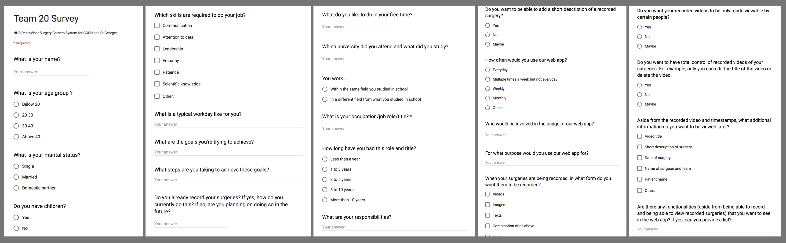

We used a questionnaire to gather user data to further understand our user requirements. We formulated the questions in a way that would enable us to gain an understanding of both who would use our system and what features they would appreciate. This data was then processed and evaluated, enabling us to create our initial sketches, persona and scenario.
We believed that this was the best choice as we were able to get answers for specific questions and able to gather both qualitative and quantitative data. Furthermore, as our users are doctors with busy schedules, we decided to use this data-gathering technique as alternatives were time-consuming. For example, a focus group would be very difficult to arrange with a sufficient number of users.
The questionnaire:
Dr. Ann Phillips is a Neurosurgeon at St. George’s Hospital, a teaching hospital in London. Aside from diagnosing and treating disorders of the central and peripheral nervous system, she also participates in the training and education of trainee surgeons.
Currently, trainees observe surgeries done by Dr. Ann Phillips by either being present in the operating theatre as she performs a surgery or by watching recorded videos. However, not a lot of students can fit into an operating room at a given time, watching recorded videos has very limited immersion, and having a camera setup in the operating theatre takes up unnecessary space.
Dr. Ann Phillips strongly believes this current method of education can be vastly improved. She then makes use of our web app along with a kinect for azure camera attached to her surgical glasses to record and store videos of her surgeries. She can highlight key events by making timestamps during the recording which can be viewed later. This way, Dr. Ann Phillips’s trainees can watch and study her surgeries anytime and anywhere and as the videos can be viewed in 3D and in 1st person, it will feel as if they are in the operating theatre themselves and see the operation from Dr. Ann Phillips’s point of view.
We drew sketches for alternative designs, storyboards, wireframes based on the user research, keeping our persona and scenario in mind.
We then showed them to our users in an interview for feedback and redrew them to incorporate the changes for improvement.
The wireframe and design sketches were used to actualise the prototype and the storyboard was developed from the persona and scenario.
| Heuristic | Problem | Solution |
|---|---|---|
| Flexibility | No sort option | Add sort button |
| User Control | No back/return buttons on some screens | Add back buttons where appropriate |
| Visibility of system status | Confirmation of save | Add pop up confirming saving of video |
After building our initial prototype we showed it to some of the users we sent the questionnaires for initial research to.
Improvements suggested:
Positive comments: